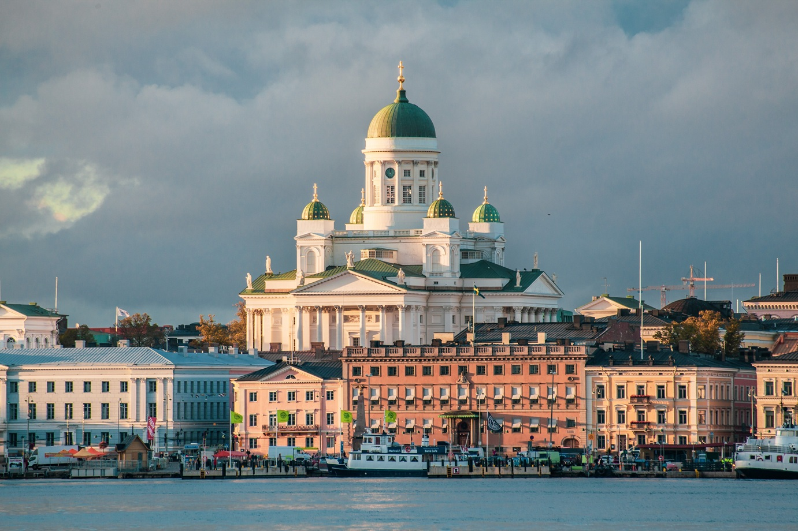

For many years, the UK has been among the most popular destinations for Finnish students and researchers abroad. Moving to a different country is still always a big step, and with Brexit many things have changed. This virtual information event will be opened by the British Ambassador to Finland, Theresa Bubbear. Afterwards a panel consisting of Finnish students and researchers and other experts will tell you What it is like to study or carry out research in the UK, How much the costs are and what funding is available, How does one apply to study or work at British universities, and What the visa and immigration requirements are. The participants are encouraged to send questions in advance. There is also an opportunity to ask questions during the Q&A; session. The event covers undergraduate and postgraduate studies as well as postdoctoral research. Organisers: Finnish Science Society in the UK; British Council; British Embassy, Helsinki; Finnish Embassy, London; Finnish Student Society of Great Britain (ISO ry); Imperial College London. Link here
The Society
The Finnish Science Society in the United Kingdom is dedicated to fostering collaboration and networking among Finnish scientists and researchers based in the UK. Our mission is to support academic exchange, organize events, and provide a platform for sharing knowledge and opportunities.
Advocating
The society acts to advocate for the interests of researchers to advance and promote scientific collaboration and mobility between Finland and the United Kingdom.
Representation
The society acts to encourage constructive dialogue on relevant issues with the Finnish and British goverments and their embassies.
Social
Outwith the pandemic the society organised social events, typically in London, after an invited talk.
Networking
The society acts as a point of contact for its membership and acts to facilitate inquires on issues pertaining to research in the UK and Finland.
Speaker Series
We organise on average 3-4 events a year, most of them being talks and discussions at a variety of locations in London, as well as virtually.
Brexit
Click here for our advisory document on how Brexit may impact scientific collaboration and mobility between Finland and the United Kingdom
Brexit, Science, and Finland
The United Kingdom's exit from the EU (Brexit) happened on 31 January 2020. Further negotiations regarding the future relationship between the United Kingdom (UK) and European Union (EU) have now begun.
Finnish scientists living, working and studying in the UK are an asset to Finland as a nation. Finnish scientists that have established themselves in the UK have a network of contacts in the country, and can aid in creating new links between Finnish and UK institutions. Those who leave Finland for their studies or for a research post and then return to Finland bring new knowledge, ideas and connections with them. Finland should aim to encourage the international behaviour of Finnish scientists and stay in touch with its scientists abroad. If contact is maintained, Finland can draw on the knowledge and contacts of its scientists and attract more scientific collaboration with other nations.
Up until now the focus of the Brexit debate has been on what the UK's position is, while the interests of Finland have widely remained undiscussed. Our review aims to identify and outline what Finnish scientists consider necessary for the future relationship between Finland and the UK to allow for fruitful scientific collaboration. The contents are based on an open discussion of the Finnish Science Society in the UK on 12 January 2019 and a meeting with the Finnish Ambassador Markku Keinänen on 11 March 2020. This document covers four main areas:
- the role of science and research in the negotiations
- UK participation in EU research framework programmes
- status of students
- mobility of researchers
These views may be of interest to parties such as the Finnish government and the EU Commission when the details of the future of scientific collaboration between the UK and EU are discussed.
Upcoming Events
-
-
The Society of Spanish Researchers in the UK (SRUK/CERU) has organised the First UE Research in the London event in collaboration with the European Parliament Liaison Office in the UK, the Portuguese Association of Researchers and Students in the UK, the Association of Italian Scientists in the UK, Polonium Foundation, the Finnish Science Society in the UK, the Dutch Academic Network in the UK, the French Education and Research Network in the UK, and Native Scientists. During the event, eight EU researchers based in London will present their work in a 5-minutes presentation format. The talks will be delivered using plain language. The organisers will select the speakers and aim to maximise their diversity in terms of gender, nationality, career stage, affiliation, and research field. If you would like to present at the event, please send a title and a short abstract when registering*. After the talks, there will be time for the attendees and speakers to interact and network. The event is free and open to the public, but previous registration is required. Either if you would like to meet more EU researchers working in London or want to learn about the cool research they do, you cannot miss this opportunity! *Those wanting to present at the event must register before the 21st of May. Selected speakers will be informed on the 22nd of May.
-
On Thursday 10 June, we will organise an online information event for Finns who are interested in studying or carrying our research in the UK. The event will be opened by the British Ambassador to Finland, Tom Dodd. Afterwards a panel consisting of Finnish students and researchers and other experts will talk about:
- What it is like to study or carry out research in the UK,
- How much the costs are and what funding is available,
- How does one apply to study or work at British universities,
- What the new visa and immigration requirements are,
and answer questions from the audience. The event covers undergraduate and postgraduate studies as well as postdoctoral research. The event is organised in co-operation with the British Council; British Embassy, Helsinki; Finnish Embassy, London; Finnish Student Society of Great Britain (ISO ry); Imperial College London; and Osk. Huttunen Foundation. You can register and find more information at https://opiskelu-uk-2021.eventbrite.co.uk. Please also share the link to anyone who might be interested. -
Our midsummer event will be held online on Monday 21st June 2021 at 17:00 BST. We are delighted to have professor Yrjö Helariutta from University of Cambridge and University of Helsinki speaking about "Genetic regulation of carbon sink effects in forest trees". After the talk there will be time for informal networking and chat with other members. You can register for the event at https://www.eventbrite.co.uk/e/lecture-genetic-regulation-of-carbon-sink-effects-in-forest-trees-tickets-157940964677 The registration deadline is Friday 18th June and we will send the link to the online event to the email address you provide in the registration form. The event is free, but when registering you will have the option of making a voluntary donation to support the activities of the Society. If you know a person who would be interested in participating in the event, you might want to suggest them to join the Finnish Science Society. To join, just fill the membership form at https://www.finnishscience.org.uk/. Membership is free.
-
The Finnish Science Society in the UK would like to invite you to its Annual General Meeting, which is held at 5pm BST on Tuesday 20th of April. This meeting will be held online. The meeting will elect the Committee for 2021 and discuss plans for future activities. As a Society, the more active members we have, the more we can do. Therefore we hope that you can join the meeting and let us have your ideas for activities, and consider putting yourself forward for the Committee. If you want to know more about the work of the Committee, please get in touch with us at finnish.science.uk@gmail.com. Please register for the AGM at https://www.eventbrite.co.uk/e/annual-general-meeting-of-the-finnish-science-society-in-the-uk-tickets-149402828883. One of the most important issues for us this year continues to be the future relationship between the UK and the EU, and its implications for scientific collaboration and mobility. The Society aims to keep science high on the agenda and give a strong voice to its members by communicating closely with the Finnish Embassy and government departments.
-
Tom Dodd, the British Ambassador to Finland, has promised to present the current situation of Brexit negotiations to the members of Finnish Science Society in the UK. This event will be held online from 17:00 to 18:30 on Wednesday 11th November 2020. Ambassador's talk will be followed by a discussion where all members can ask questions about the future relationship between UK and EU/Finland. You can register for the event at https://www.eventbrite.co.uk/e/brexit-discussion-with-british-ambassador-to-finland-tickets-126977738835 The registration deadline is Monday 9th of November. We will send the link to the online event via the email address you provide in the registration form. The event is free, but you will have an option of making a voluntary donation to support the activities of our society when registering. We would also like to invite you to email questions beforehand if possible (finnish.science.uk@gmail.com, by Monday 9th of November 2020). Would you also let us know if you want to ask it yourself or do you prefer that the chair will take it. You can send your questions to us even if you are not attending the event and you are also, of course, free to ask questions in the event without pre-submission.
-
Climate change is not a distant threat – countries must act together to accelerate action to reduce emissions, protect our environment and adapt to the consequences that we are seeing all over the world. The UK and Finland are both forerunners in driving sustainable growth. In the UK, 2008 Climate Change Act set the world’s first legally binding long-term emissions reduction target and the UK is the fastest in G20 to decarbonise its economy since 2008. The UK, in partnership with Italy, will also host the COP26 at the end of 2021. Finland has demonstrated climate leadership by setting an ambitious target to reach carbon neutrality by 2035, and EU global leadership in climate action was Finland’s key priority during its EU Presidency in 2019. This series of online workshops will allow participants to develop an in-depth understanding of the sustainability research landscape both in the UK and in Finland, including key institutions and stakeholders. Throughout the programme, participants will have the opportunity to exchange ideas on key topics as well as build new networks. The workshops will also help to identify complementary strengths between the two countries, providing a solid framework for future cooperation.
-
The committee of Finnish Science Society in the UK would like to welcome new and old members to join an informal online meeting on 15th October 2020 at 19:30. Make a cup of tea or pour a glass of wine, chat with other Finnish scientists and people interested in science, share your Covid-19 and Brexit experiences, and find out about the activities of the Society. You don’t have to register to the event. Just click the link that we will send closer to the event. The link to the Facebook-event: https://www.facebook.com/events/345633769979312
-
The next Finnish Science Society event will be held online on Friday 15th May 2020 at 17:00. We are delighted to have Janetta Evelina Skarp from Imperial College London speaking about "COVID-19: contact tracing and the costs of non-pharmaceutical interventions". The talk is aimed for a general audience and it is organised with the Finnish Institute in London. You can register for the event at https://www.eventbrite.co.uk/e/covid-19-contact-tracing-and-the-costs-of-non-pharmaceutical-interventions-tickets-104299362200 The registration deadline is this Wednesday 13th May and we will send the link to the online event to the email address you provide in the registration form. The event is free, but when registering you will have the option of making a voluntary donation to support the activities of the Society.
-
The outcome of the ongoing negotiations on the future relationship between the UK and the EU will have huge implications for Finnish scientists working and studying in the UK and for scientific collaboration and mobility between the two countries. Therefore the Finnish Science Society in the UK has compiled the attached document summarising the views and priorities of its members, based on discussion meetings held in January 2019 and March 2020 and online survey responses. This document will be shared with the Finnish Embassy and other relevant bodies, and you are also welcome to pass it on to anyone who may be interested. As the situation continues to evolve over the coming months, we plan to keep the updating the document. Therefore please let us know if you have any additions, comments or suggestions.
-
We are going to have an informal get-together at Katzenjammers in London SE1 1TY on Wednesday 27 November (for details, see https://www.facebook.com/events/805975263154239/), so please join us to chat with other members and to meet new ones. To help our planning, please let us know if you are coming, either by replying to this message or by indicating it on Facebook. We would also like to reach more Finnish scientists based in the UK, whether they have been here for a long time or just arrived, from students and academics to those working in the private sector or who are just interested in science. Therefore if you know anyone like that who is not already a member, could you please pass the attached invitation on to them?
Past Events
Some of our past events...
Membership
We welcome all members with an active or passing interest in the society and its goals. Prospective members should use this form to submit a membership request. Membership is free.
The Committee
The new Committee was elected in the Annual General Meeting, which was held online on 20 April.
Arttu Rajantie
Imperial College London, Chair
Jaana Tarma
Treasurer
Kalle Sipilä
Imperial College London, Secretary
Harriet Calvert
Markus Ketola
University of Edinburgh
Myunghoon Paik
Laura Parkkinen
University of Oxford
Luke Roebuck
University of Manchester
Joel Vasama
University College London

Contact us
Please write to us directly.